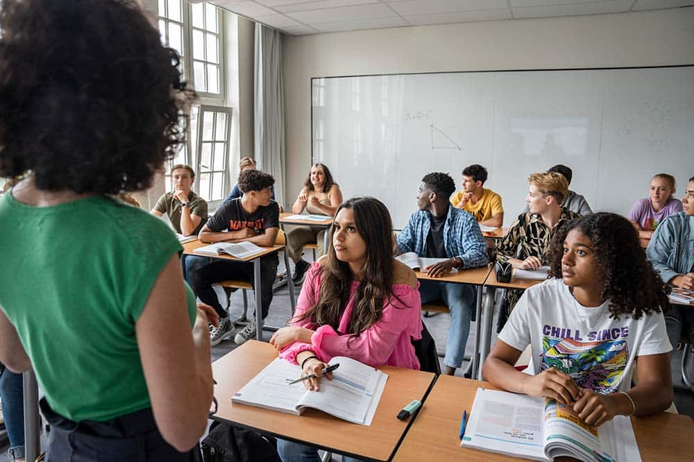
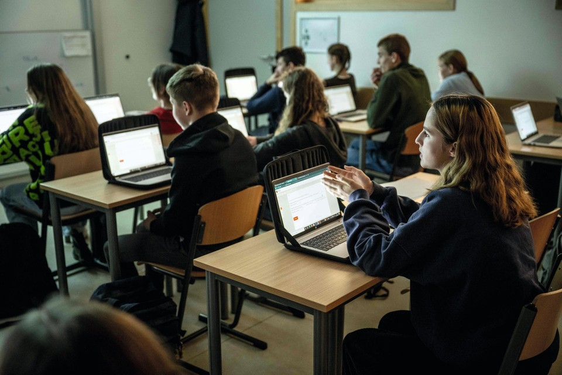
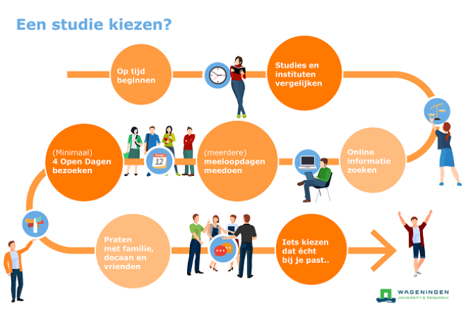
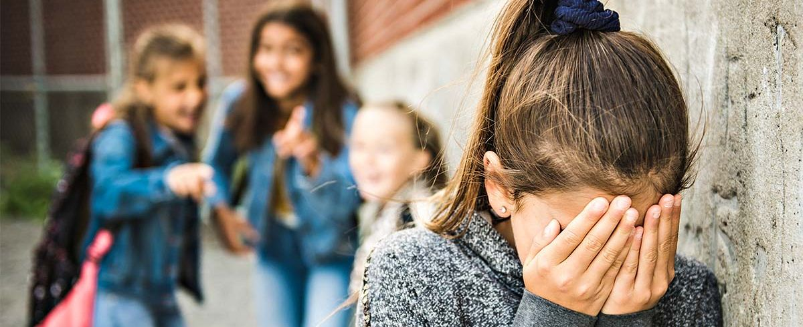
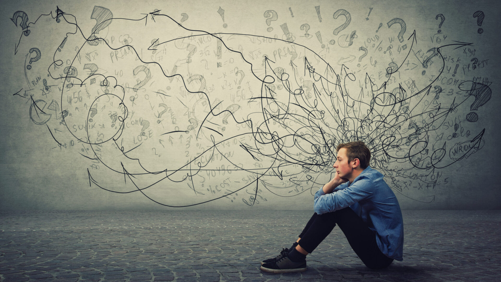

Onderwijs
Meer mensen moeten school afmaken
Scholen worden soepeler met pauzes door leerlingen zelf hun pauzes uit te laten kiezen zolang ze aan school werk doen. Ze moeten gewoon vaste tijden hebben voor pauzes en niet hele tijd op hun telefoon zitten. Ze moeten meer gefocust te werk gaan anders gaat het moeilijk met diploma halen voor je opleiding.
Meer digitalisering
Zodat je sneller informatie kan opzoeken als je een opdracht niet snapt. Het is ook leuker dan op papier of boeken werken. En als je het leuk vindt dan verbetert het je cijfers ook nog eens. Als docenten dus ook met laptops of computers werken dan kan je makkelijker opdrachten online doorsturen en dus gemakkelijk in te leveren. Je raakt altijd het blad kwijt op papier en online niet.
Meer uitleg en ondersteuning over opleidingen op de middelbare school
Zodat je dan al goed kan kiezen wat je wilt worden want het wordt nu ook wel uitgelegd maar niet genoeg. Ze moeten er meer aandacht aan besteden want sommige mensen die nu op de opleiding zitten vinden het toch niet leuk en geen verwachtingen hebben en dat kan je voorkomen als je meer uitleg krijgt en ondersteuning met kiezen.
Meer aandacht aan pesten
Zodat iedereen gewoon normaal doet tegen elkaar en je een veilige omgeving hebt en dus goed kan concentreren op school. In plaats van elkaar pijn doen en andere mensen weer bij betrekken. Je moet leren om met respect mensen te behandelen.
Meer aandacht aan de gedachtegangen van de studenten. Of het mentaal wel met ze goed gaat.
Zodat je meteen geholpen kan worden als het niet goed gaat. Je kan alle oplossingen meteen krijgen. Je kan altijd terecht bij je mentor of directeur. Er wordt om de week een gesprek met je gevoerd met je mentor om te kijken of alles goed gaat.
